1810A24 clutch - r + r with gearbox removed
- Path
- Procedures > 18 CLUTCH > 1810 CLUTCH MECHANISMS > 1810A clutch mechanism > 1810A24 clutch - r + r with gearbox removed
- Kind
- repair procedure (removal / refitting; the operation number is the code)
- Applies to
- engines: 1.6 TS , 1.8 TS, 2.0 JTS, 2.5 V6, 3.2 V6, 1.9 JTD 8v , 1.9 JTD 16v, 2.0 JTS, 2.4 JTD 10v, 2.4 JTD 20v; all production periods
- Interactive page
- https://sloeber94.github.io/elrnDB-a156/en/#/3237892
Applies to: engines: 1.6 TS , 1.8 TS; all production periods
 Removing
Removing
 Refitting
Refitting1. Undo the bolts (1a) and remove the clutch cover (1b) and clutch plate.
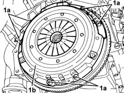
Applies to: engines: 1.6 TS , 1.8 TS; all production periods
Refitting
Removing1. Fit the clutch plate and cover (1a) using flywheel locating tool (1b).
 | Name | Country |
|---|---|---|
1b | Clutch centering | 1.870.447.000 |
2. Tighten the clutch cover bolts to the specified torques.
 | Fastening | Component | Ø | Value (daNm) |
|---|---|---|---|---|
2 | Bolt | CLUTCH ASSEMBLY | M8 | (Engine flywheel side) 2.6 - 3.0 |
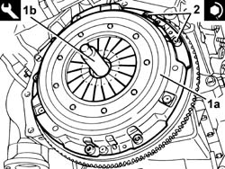
Applies to: engines: 1.6 TS , 1.8 TS; all production periods
Remove the centring tool.
Applies to: engines: 2.0 JTS, 2.0 JTS; all production periods
Removing
Refitting1. Fit the flywheel lock.
| Name | Country |
|---|---|---|
1 | Counter-torque | 1.860.161.001 |
2. Undo the bolts (2a) and remove the clutch drip tray (2b) and the clutch disc (2c).
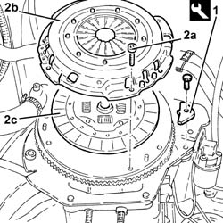
Applies to: engines: 2.0 JTS, 2.0 JTS; all production periods
Refitting
Removing1. Place the clutch disc (1a) and the clutch drip tray (1b) back in its housing using the tool (1c) for centering.
| Name | Country |
|---|---|---|
1c | Centering | 1.870.447.001 |
2. Tighten the bolts fixing the clutch drip tray to the recommended torque.
| Fastening | Component | Ø | Value (daNm) |
|---|---|---|---|---|
2 | Bolt | CLUTCH ASSEMBLY | M8 | (Engine flywheel side) 2.5 ÷ 3.1 |
3. Remove the flywheel lock.
| Name | Country |
|---|---|---|
3 | Counter-torque | 1.860.161.001 |
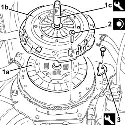
Applies to: engines: 2.5 V6, 3.2 V6, 1.9 JTD 8v , 2.4 JTD 10v; all production periods
Removing
Refitting1. Undo the bolts (1a) and remove the clutch cover (1b) complete with clutch release bearing (1c).
2. Remove the clutch disc.
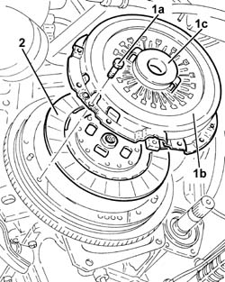
Applies to: engines: 2.5 V6, 3.2 V6, 1.9 JTD 8v , 2.4 JTD 10v; all production periods
1. Remove the clutch release bearing (1a) from the clutch cover using the tool (1b).
| Name | Country |
|---|---|---|
1b | Extractor | 1.821.215.000 |
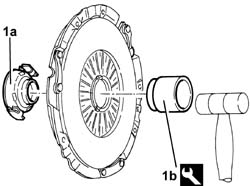
Applies to: engines: 2.5 V6, 3.2 V6, 1.9 JTD 8v , 2.4 JTD 10v; all production periods
Refitting
Removing1. Fit the clutch disc (1a) and clutch cover (1b), centring them using the tool (1c).
| Name | Country |
|---|---|---|
1c | Centering | 1.820.124.000 |
2. Tighten the clutch cover bolts to torque.
| Fastening | Component | Ø | Value (daNm) |
|---|---|---|---|---|
- | Bolt | CLUTCH ASSEMBLY | M8 | (Engine flywheel side) 2.6 - 3.0 |
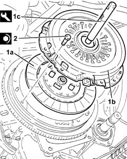
Applies to: engines: 2.5 V6, 3.2 V6, 1.9 JTD 8v , 2.4 JTD 10v; all production periods
Remove the centring tool.
Applies to: engines: 1.9 JTD 16v; all production periods
Removing
Refitting1. Fit the flywheel lock.
| Name | Country |
|---|---|---|
1 | Counter-torque | 1.860.846.001 |
2. Undo the bolts (2a) and remove the clutch cover (2b) complete with thrust bearing (2c).
3. Remove the clutch disc.
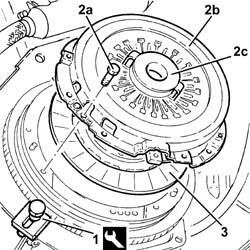
Applies to: engines: 1.9 JTD 16v; all production periods
1. At the bench, remove the clutch release bearing (1a) from the clutch cover using the tool (1b).
| Name | Country |
|---|---|---|
1b | Extractor | 1.821.215.000 |
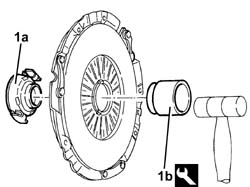
Applies to: engines: 1.9 JTD 16v; all production periods
Refitting
Removing1. Place the clutch disc (1a) and the clutch cage (1b) back in its housing using the centring tool (1c).
| Name | Country |
|---|---|---|
1c | Tool for centering clutch | 1.870.081.000 |
2. Tighten the bolts fixing the clutch drip tray to the recommended torque.
| Fastening | Component | Ø | Value (daNm) |
|---|---|---|---|---|
2 | Bolt | CLUTCH ASSEMBLY | M8 | (Engine flywheel side) 2.3 ÷ 2.8 |
3. Remove the flywheel lock.
| Name | Country |
|---|---|---|
3 | Counter-torque | 1.860.846.001 |
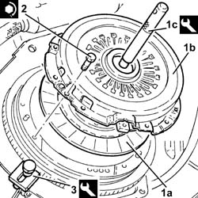
Applies to: engines: 1.9 JTD 16v; all production periods
.
Applies to: engines: 2.4 JTD 20v; all production periods
Removing
RefittingIF TOOL 1.871.003.100 IS AVAILABLE, REMOVE THE CLUTCH DEVICE AS DESCRIBED BELOW.
1. Fit the flywheel lock.
| Name | Country |
|---|---|---|
1 | Counter-torque | 1.860.846.001 |
2. Unscrew three bolts at 120 degrees securing the clutch holder.
3. Fit locator (3a) and the remaining part of tool (3b) by screwing the bolts (3c) into the seats of bolts removed previousl.
| Name | Country |
|---|---|---|
3 | Tool for Extracting/Fitting | 1.871.003.100 |
4. Turn the tool wheel to bring pins (4a) into contact with plate (4b).
5. Unscrew the remaining cutch holder bolts.
6. Unscrew the tool wheel to unload the clutch mechanism diagragm spring.
Remove the tool.
| Name | Country |
|---|---|---|
- | Tool for Extracting/Fitting | 1.871.003.100 |
7. Remove the clutch holder.
Remove the clutch disc.
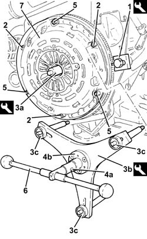
Applies to: engines: 2.4 JTD 20v; all production periods
IF TOOL 1.871.003.100 IS NOT AVAILABLE, REMOVE THE CLUTCH DEVICE AS DESCRIBED BELOW.
1. Fit the flywheel lock.
| Name | Country |
|---|---|---|
1 | Counter-torque | 1.860.846.001 |
2. Unscrew the clutch holder bolts by loosening them a little at a time and diagonally to take the load off the diaphragm spring.
3. Remove the clutch holder.
Remove the clutch disc.
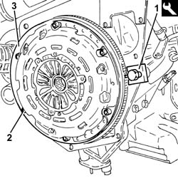
Applies to: engines: 2.4 JTD 20v; all production periods
Refitting
RemovingIF TOOL 1.871.003.100 IS AVAILABLE, REFIT THE CLUTCH DEVICE AS DESCRIBED BELOW.
1. Fit the tool locator in the crankshaft.
Refit the clutch plate in its housing.
2. Refit the clutch holder.
3. Fit the remaining part of clutch installation tool (3a) by tightening tool (3b).
4. Turn the tool wheel to bring pins (4a) into contact with plate (4b).
5. Hand-tighten the three free bolts securing the clutch device.
6. Unscrew the tool wheel to unload the clutch mechanism diaphragm spring.
Remove the tool.
| Name | Country |
|---|---|---|
- | Tool for Extracting/Fitting | 1.871.003.100 |
Hand-tighten the remaining clutch bolts.
Gradually tighten the clutch bolts diagonally to achieve the specified torque.
| Fastening | Component | Ø | Value (daNm) |
|---|---|---|---|---|
- | Bolt | CLUTCH ASSEMBLY | M8 | (Engine flywheel side) 2.8 |
7. Remove the flywheel lock.
| Name | Country |
|---|---|---|
7 | Counter-torque | 1.860.846.001 |
Applies to: engines: 2.4 JTD 20v; all production periods
IF TOOL 1.871.003.100 IS NOT AVAILABLE, REFIT THE CLUTCH DEVICE AS DESCRIBED BELOW.
1. Place the clutch disc and the clutch drip tray (1a) back in its housing using the centering tool (1b).
| Name | Country |
|---|---|---|
1b | Clutch centering | 1.875.086.000 |
Hand-tighten the clutch dvice bolts.
2. Gradually tighten the clutch bolts diagonally to achieve the specified torque.
| Fastening | Component | Ø | Value (daNm) |
|---|---|---|---|---|
2 | Bolt | CLUTCH ASSEMBLY | M8 | (Engine flywheel side) 2.8 |
3. Remove the flywheel lock.
| Name | Country |
|---|---|---|
3 | Counter-torque | 1.860.846.001 |
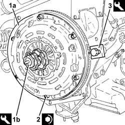
Topics linked from this page (1)
Topics that link to this page (12)
- 1020D26 flywheel side oil seal cover - r+r
- 1020D36 flywheel end oil seal - replace for manual gearbox with hydraulic selection versions
- 1020D38 flywheel side oil seal - replace
- 1024B10 engine flywheel - r + r for versions with manual gearbox
- 1024B11 engine flywheel - r r for manual gearbox with hydraulic selection versions
- 1810A20 clutch - r + r
- 1810A28 clutch - r r for manual gearbox with hydraulic selection versions
- 1820A24 thrust bearing linkage - r + r
- 1820A30 thrust bearing - r + r with gearbox removed
- 2110A10 manual gearbox and differential - r + r
- 2110A11 manual gearbox with differential - r r for versions with hydraulic selection
- 2110C22 gear input shaft seals - r r